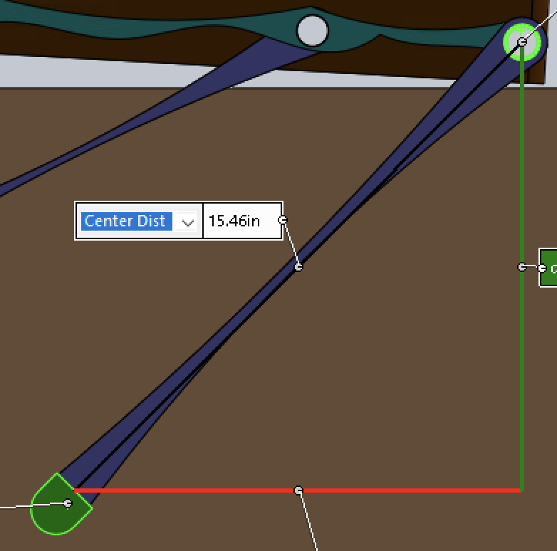
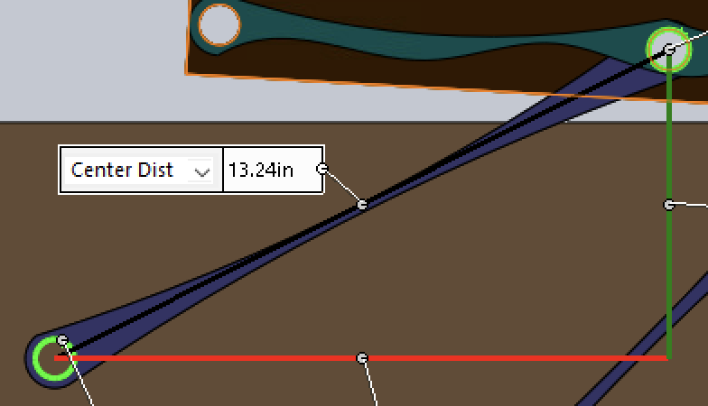
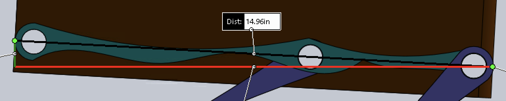

Overview
The goal of this project was to design a linkage mechanism for an automated trash container. Users deposit trash onto a tray on top of the container, and the linkage sweeps the tray away and dumps its contents through an opening at the back — all without the mechanism passing through the container body. The container is 35 cm wide and 40 cm tall (35 cm body plus a 5 cm tray section on top), and all pivot points must sit on the container's sides with no external extensions.
The core deliverable was determining the pivot point locations and link lengths for a four-bar linkage that moves the tray between two positions: Position A (tray horizontal on top, receiving trash) and Position B (tray rotated to the back, dumping trash into the rear opening).
Note: The underlying linkage geometry for this project was developed by a classmate using Math Illustrations, with professor approval. The SolidWorks model was personalized (part colors and appearances) for this submission. All measurements shown below were taken directly from the assembly.
Linkage Synthesis
The pivot points were found using a two-position graphical synthesis method. Two design points on the tray (labeled A, B, and C in the diagram) were defined in both the receiving and dumping positions. The perpendicular bisectors of each point's displacement between the two positions were constructed, and their intersections yielded the ground pivot locations P1 and P2. This is a standard approach for designing a four-bar linkage that guides a rigid body through two prescribed positions.
Pivot Points & Link Lengths
All measurements below were taken from the SolidWorks assembly using the Measure tool. The assembly was built in IPS (inch-pound-second) units, so raw values are reported in inches.
Pivot Point Locations
Both ground pivots are measured from the top-left corner of the container as the origin.


Link Lengths



Motion Demonstration
The video below shows the SolidWorks motion study of the linkage actuating from Position A (tray receiving) to Position B (tray dumping) and back. The tray sweeps around the outside of the container without passing through the body, and tilts to dump contents into the rear opening.